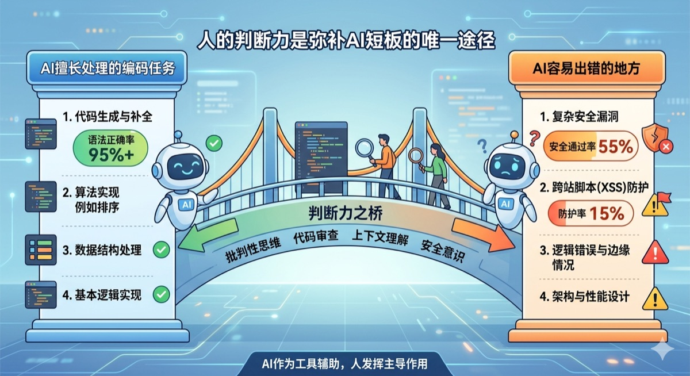
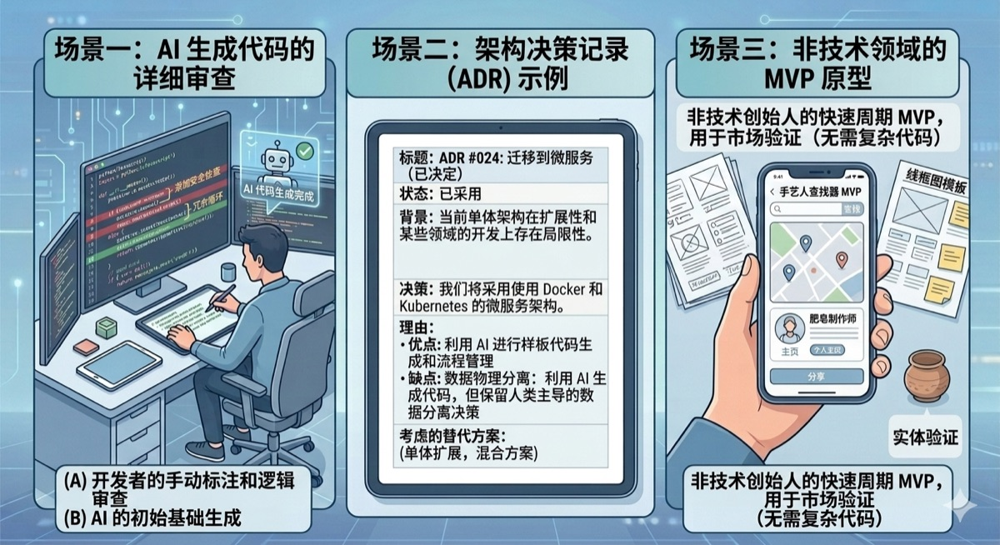

2026年6月，The Register发布了一项DevOps社区调研，数据让所有人沉默：五分之四的企业承认，生产环境中存在由AI生成代码引入的安全漏洞。注意，这不是说这些漏洞"不小心溜进去"的——开发者在代码审查阶段就已经发现了问题，包括身份认证缺陷、依赖包漏洞、边界检查缺失，但在交付压力下，"先用AI把功能跑通，让安全团队后续修补"成了默认策略。
问题在于，后续修补几乎从不发生。
这是AI Coding时代最讽刺的困境：工具从未如此强大，代码产出从未如此之快，但我们对产出的信任却跌到了历史最低点。Stack Overflow 2025年度开发者调查显示（样本覆盖全球49,000+名开发者），只有29%的开发者相信AI输出的准确性，比2024年的40%下降了11个百分点。46%的开发者主动表示"不信任AI工具的输出"。与此同时，84%的开发者正在使用或计划使用AI编程工具，51%每天使用。
一边是前所未有的大规模采用，一边是持续下滑的信任。这个剪刀差藏着关于"人才"的真正答案。
AI Coding不是在淘汰程序员，而是在分化程序员
在聊"需要什么样的人才"之前，得先把一个流行的焦虑说清楚：AI Coding会不会让程序员失业？
答案是：不会。但会让不会用AI的程序员和会用AI的程序员之间的差距变得巨大。
JetBrains 2026年1月的AI Pulse调查数据显示，90%的专业开发者日常使用至少一种AI编程助手。DX研究（2026年Q1报告，样本覆盖超过500家企业、135,000+名开发者）显示，AI生成代码在生产代码中的占比已升至27.4%，AI辅助代码占比42%，预计2027年将升至65%。全球AI编程工具市场规模在2026年达到约128亿美元，是2024年的三倍。
但这些数字不能只看总盘子。如果拆开看，你会发现一个更微妙的图景。
JobsByCulture在2026年5月的一篇行业分析中提出了"放大效应"（The Amplification Effect）：AI编程工具不是让所有开发者平均变强，而是在放大强者和弱者的差距。一个理解设计模式、系统架构和故障模式的资深工程师，有了AI工具之后生产力飙升——能精准地描述需求、准确地评估AI输出、敏锐地捕捉到"AI在胡说但代码能编译"的瞬间。而一个无法判断AI生成代码质量的初级工程师，用了AI工具之后反而变得更差——不加批判地接受建议，引入隐蔽的Bug，制造需要别人来收拾的技术债务。
METR的一项随机对照试验发现，在熟悉的代码库上，AI工具让有经验的开发者完成任务的时间反而增加了19%——不是AI没用，而是他们花了时间去验证而非盲目接受。真正的高手已经切换了工作模式："审查AI"替代了"亲自编码"。
所以，问题不是"AI Coding会不会抢走我的工作"，而是"在AI Coding时代，什么能力在升值，什么在贬值？"
从"写代码的人"到"技术决策者"
要理解什么能力在升值，先看一组具体的行业数据。
根据前程无忧2026届校招AI人才需求报告，57.1%的企业对AI技术研发类岗位（算法工程师、大模型开发工程师）的需求在上升，35.6%的企业对AI技术支持类岗位的需求也在增加。但另一面，20.3%的企业表示"标准化、重复性岗位"的需求在下降——翻译过来就是：如果你只会一个指令一个指令地写CRUD、写样板代码，这些工作正在被AI消解。
德勤2026年2月发布的《AI-native Workforce》报告更直接地画出了这条分界线：传统的"编码者"角色正在衰退（数据分析师、软件测试员、初级开发者），而"智能架构师"型人才的需求正在爆发——这些人不是在写代码，而是在"设计AI能安全可靠执行任务的系统"。报告特别指出，在美洲和欧洲，40%-45%的AI相关岗位开始要求硕士或博士学历，不是因为他们需要更高的学历门槛，而是因为这类工作需要的不是手写代码的速度，而是对系统边界的深刻理解。
软件工程正在从一门"创造"的学科转变为一门"编排"的学科。工程师的价值从"我能写出这段代码"变成了"我知道这段代码该不该存在于这个系统里"。
在SWE-bench编程能力基准测试中，Claude Opus 4.7达到了87.6%的得分，Gemini 3.1 Pro达到80.6%，OpenAI的推理模型在75%-80%区间。这些数字说明，在解决已定义好的编码任务上，AI已经非常接近甚至超过了人类专家的水平。但基准测试衡量的恰恰是那些"边界清晰、目标明确"的问题——而这并不是真实工作中最难的部分。
真实工作中最难的部分是什么？是你拿到一个模糊的需求："我们想做一个用户增长引擎"，然后你要定义什么叫"增长引擎"、拆解为什么样的子系统、每个子系统的边界在哪里、数据怎么流、异常怎么处理。这些事，AI帮不了你。不是因为AI不够聪明，而是因为AI不承担"错了怎么办"的责任。

三种能力在升值：判断力、架构力、定义力
如果你现在是一个AI方向的工程师，或者正在转型AI，有三件事情值得你重新审视。
判断力：你的价值不在生成代码，而在判断代码能不能用
Veracode 2026年5月发布的安全研究报告测试了超过150个大语言模型，结果令人深思。AI生成代码的语法正确率超过95%，但在基本安全测试中的通过率只有55%。更严重的是，在跨站脚本攻击（XSS）场景下，安全通过率仅为15%；日志注入场景下是13%。相比之下，SQL注入防护的通过率是82%，不安全加密算法的识别率是86%。
这个数据揭示了一个关键规律：AI擅长处理"有明确规则"的安全问题（如SQL参数化查询、加密算法选择），但在需要"上下文推理"的安全问题上表现糟糕（如XSS防护需要理解用户输入在整个渲染链路上的流动和转换）。而且，这个安全通过率从2023年到2026年几乎没有变化——语法得分从50%飙到了95%，安全得分原地踏步。模型一代代升级，安全编码能力没有同步提升。
而这就是"判断力"具体体现的地方。一个会用AI的工程师和一个依赖AI的工程师，区别在于前者看完AI生成的代码后能指出："你这里对用户输入做了HTML实体编码，但在后续的JavaScript模板拼接中又被解码了，XSS防护失效。"后者只看到代码编译通过了、测试通过了，于是合并了。
判断力不是"我不相信AI所以我每行都自己写"，而是"我知道AI在哪些地方容易犯错，所以我会在这些地方加倍审查"。这和Stack Overflow 2025调查中66%的开发者的最大痛点完全对应——"AI生成的解决方案几乎是对的，但就是不完全对"。
CSA（云安全联盟）2026年3月的一份安全分析报告指出，AI辅助代码提交中硬编码密钥的泄露率是纯人工代码的2倍多——3.2% vs 1.5%。GitHub公开仓库中发现的硬编码凭证数量在2025年同比增长了34%，是历史最高年度增幅。这不是AI的错，因为AI的训练数据里确实充满了"先用admin/admin跑通再改"的代码模式。但如果你没有判断力，这些模式就会从训练数据流进你的生产环境。
架构力：AI能实现模块，但不能设计系统
2026年AI编程工具的竞争已经从"谁补全代码更准"变成了"谁的Agent能力更强"。Cursor推出8个Agent并行协作模式，Claude Code采用主Agent+子任务分解架构，GitHub Copilot推出了Workspace Agent平台。这些工具的目标是让AI从一个"代码补全器"变成一个"工程执行者"——给定一个目标，它能分析、规划、编码、测试、迭代。
但这件事有一个天然的天花板。
SWE-bench测试的是让AI解决真实的GitHub Issue，这些Issue通常已经清楚地定义了"要改什么"。但软件工程中最核心的决策——系统怎么拆、边界怎么定、接口怎么设计、技术栈怎么选——几乎从不出现在Issue描述里。
德勤报告中有一个精确的表述：招聘的重点正在从"掌握特定编程语言的人"转向"能在多个领域之间架桥的人"。这些"架桥者"需要同时理解数据管道、模型行为和安全治理风险。在AI Coding时代，最稀缺的不是会写Go或Rust的人，而是能在数据库选型、API网关设计、Agent生命周期管理和业务指标定义之间建立连贯思维的人。
如果你回顾任何一个真实的软件项目，你会发现系统设计的决策往往发生在"没有任何一行代码被写出来之前"。比如你要设计一个多Agent协作系统，你需要决定Agent之间的通信是走消息队列还是走gRPC、状态同步是中心化还是去中心化、一个Agent失败了是重试还是回滚。这些决策依赖的是你曾经在类似场景下"搞砸过"的经验，以及你对不同技术方案在不同流量和一致性要求下"会怎样坏掉"的直觉。AI没有这种直觉，它只有概率。
所以，当AI变得越来越擅长"在给定架构下实现功能"时，"设计架构"这个能力本身的价值就变得更高。它不是在与AI竞争，而是在放大AI的执行力。一个架构设计清晰的人，用AI编程工具可以快速产出高质量代码；一个架构设计混乱的人，用AI工具只会更快地产出混乱的代码。
定义力：比"解决问题"更稀缺的是"定义该解决什么问题"
这个问题在2026年变得尤其具体。
AI Coding工具的核心交互已经从"我在编辑器里写三行，Tab键补全一行"进化到了"我在自然语言里描述需求，Agent自主生成多文件改动"。Cursor的Composer（代理模式）支持一次性跨多个文件编辑，Claude Code支持从命令行接收复杂的自然语言指令。
这意味着，"能跟AI说清楚要做什么"正在成为一项核心技能。
但"说清楚要做什么"这件事远比你想象的难。它不是"请帮我写一个用户登录功能"——这个谁都会说。它是在一个已有50万行代码的系统中，准确地描述："当前订单模块与支付模块通过同步HTTP调用耦合，在促销高峰期会造成雪崩效应。我需要你帮我把支付流程改成异步的，引入消息队列解耦，保持订单状态的最终一致性。注意，现有的库存扣减逻辑在订单创建时触发，异步化后需要考虑库存预占和释放策略。"
这个Prompt背后是：你对系统现状的深刻理解、你对问题本质的抽象能力、你对技术方案的权衡意识、你对异常场景的预判经验。这些加在一起，就是"定义问题的能力"。
Stack Overflow 2025调查中有一个被忽视的数据：35%的开发者使用6-10种不同的工具来完成日常工作。在AI Coding的语境下，这意味着一个工程师需要同时操作Cursor、Claude Code、Copilot等多个工具，每个工具适用于不同类型的任务。知道"这个问题该扔给哪个工具"本身就是一种定义力——它不是技术栈选择，而是认知资源的配置策略。
一个更直接的佐证：据Veracode报告，AI模型在安全编码上的表现"卡住"了两年。从2023年到2026年，语法得分从50%飙升到95%，安全得分几乎没有变化。为什么？因为安全编码不是一个"模式匹配"问题，而是一个"定义问题"问题。你需要在生成代码之前就定义清楚：这个接口的信任边界在哪？什么输入是合法的？权限模型是RBAC还是ABAC？AI不会主动问你这些，它会直接生成一个"能跑"的版本。定义这些边界，是你的工作。
你能马上做的三件事
如果看完上面的分析你觉得有道理，下面三件事是你从现在就可以开始做的。不需要等老板批预算，不需要换工作。
第一，把你的日常开发从"我编码"变成"我审查"。
从下一张需求卡开始，不要让AI只补全你正在写的代码片段。试着让AI承担更多——让它根据你的需求描述生成完整的函数或模块，然后你的主要工作变成审查：这个逻辑对吗？边界情况覆盖了吗？安全风险在哪？这样做一周，你会发现你对自己代码的质量感正在被重置。你过去觉得自己"会写代码"，现在你会发现"会判断代码"是一个完全不同的能力。
第二，在每个项目里留下一份"架构决策记录"。
这不是什么新概念，但AI Coding让它变得特别有必要。当AI能帮你快速实现任何一个技术方案时，重要的不是实现了什么，而是为什么选A不选B。在你的项目文档里，每次做技术决策时记几句话：我选了这个方案，放弃了另一个方案，原因是XX场景下会有XX问题。半年后你回头看，这些记录就是你系统设计能力的复利。
第三，找一个你完全不熟悉的领域，用AI Coding从零搭一个MVP。
找一个非技术领域的问题——比如帮朋友的奶茶店做个库存预测工具、用AI自动分析你所在社区的环境数据——然后用Cursor或Claude Code从零搭建。目的不是做出多好的产品，而是训练你"在不熟悉的领域里定义问题"的能力。你需要先花大量时间去理解这个领域的核心逻辑，然后用自然语言把需求拆解成AI能理解的任务单元。在这个过程中，你会反复撞上一堵墙：你心里想的东西，AI听不懂，因为你没把它定义清楚。每次撞上这堵墙，你就在变强。

人才市场的分水岭已经出现了
回到开头那组数据：84%的开发者用AI，但只有29%信任它。这个剪刀差不会永远存在。它会随着模型能力的提升和工具的成熟而缩小。但在这个过程中，人才市场会完成一轮残酷的分层。
那些只把AI当成"更快写代码的工具"的人，会发现自己的边际价值越来越低——因为你快的程度是有上限的，AI只会越来越快。而那些把AI视为"放大自己判断力和架构力的杠杆"的人，会发现一个悖论：AI越强，你的价值越大。因为AI提升了执行力，执行力越强，决策的重要性就越高。你能做的决定越多越准，AI能帮你完成的就越多越快。
JobsByCulture的调研显示，已经有公司在面试中引入了"AI辅助编码测试"——不是禁止候选人用AI（因为这越来越脱离现实），而是给一个AI辅助的编码任务，评估候选人如何使用AI工具：他们是盲目接受建议，还是在迭代、质疑、优化？Replit和Vercel的面试流程中已经包含了这一维度。
这不是未来的事，这是现在正在发生的事。
当AI能写出95%语法正确的代码时，会写代码已经不是稀缺能力。知道该写什么、该信任什么、该放弃什么，才是。
（全文约7,500字）